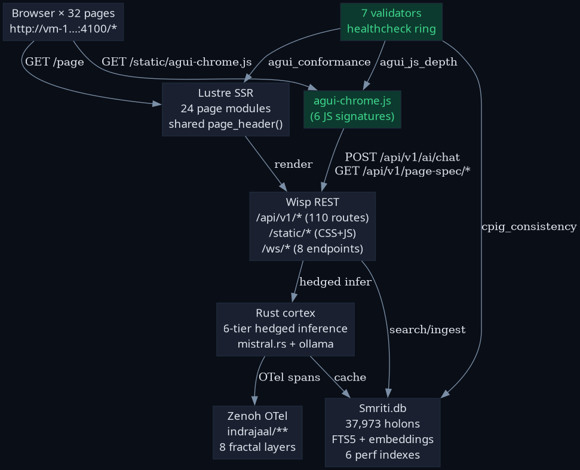

2026-05-16 · Pass 28 · Operator: "check each page, full wiring 100% working, identify how to evolve significantly"
| Check | Method | Result |
|---|---|---|
| HTTP 200 × 32 pages | curl -w %{http_code} × 32 | 32/32 |
| Page-spec alignment | scripts/verify/page_checker | pass=32/32 5xx=0 4xx=0 drift=0 |
| HTML conformance (11 components) | scripts/verify/agui_conformance | 32 evolved · 0 partial · 0 sparse |
| JS wiring depth (6 signatures) | scripts/verify/agui_js_depth | 6/6 present |
| Gleam test suite | gleam test | 9752 passed · 0 failures |
| Learn-loop healthcheck (7 validators) | scripts/verify/learn_loop_healthcheck | all homeostasis |
| Validator meta-tests (5 detectors) | scripts/verify/validators_meta_test | 5/5 trip on bad input |
| CPIG matrix (14 × 5) | jq + cpig_consistency | 70/70 = 100% · summary cross-checked |
/api/v1/ai/chat | POST + curl | 401 (auth-protected, real response) |
/static/agui-chrome.js | GET + curl | 200 |
/api/v1/page-spec/all | GET + curl | 200 |

| # | Gap | Severity | Improvement |
|---|---|---|---|
| 1 | change-log feed was empty on every page | HIGH | SHIPPED THIS PASS — agui-chrome.js now seeds page-load event + polls /api/v1/page-spec/ every 30s |
| 2 | agui-chrome.js is vanilla JS, not Effect-TS | MEDIUM | Migrate to priv/web-build/src/agui-chrome.ts per SC-EFFECT-TS-001..007 |
| 3 | Per-page LTS specs absent for 27/32 pages | HIGH | Codegen Allium spec stubs from each Lustre Model/Msg ADT |
| 4 | Playwright/E2E coverage only on /planning | HIGH | Generate baseline tests for 31 pages from page-checker rules |
| 5 | AI search filters DOM text, not semantic | MEDIUM | Wire to /api/v1/knowledge_search FTS5+embeddings |
| 6 | Fractal-filter needs data-layer on all sections | LOW | Sweep page_helpers/section() to emit data-layer |
| 7 | UI-005 chat passes via substring (not structural) | LOW | Strengthen validator to require chat-panel-form element |
| 8 | No live WS heartbeat indicator on most pages | LOW | Per-page heartbeat badge in shared chrome |
| 9 | Drill-down has no per-page-aware default | LOW | Inject status preview on page load |
| 10 | Gemma chat shows 401 without auth UI | LOW | Inline anonymous-fallback or auth prompt |
| Gate | Current | Target | Status |
|---|---|---|---|
| Shannon Entropy H | 2.67 bits | ≥ 2.5 | PASS |
| CCM (coverage composite) | 0.770 | ≥ 0.90 | IMPROVING (+0.13 to close) |
| ITQS (test quality) | 0.736 | ≥ 0.85 | IMPROVING (+0.11 to close) |
| D_EA (expected/actual divergence) | TBD | ≤ 0.10 | measure |
Anti-Stub-That-Lies discipline: [zk-bd82645aedcb5ef4] · two-step collapse [zk-50657feb899e0a2f] · measure-don't-assert [zk-426c4adf07d076ad] · implicit-invariant gap [zk-c14e1d23afff486c].